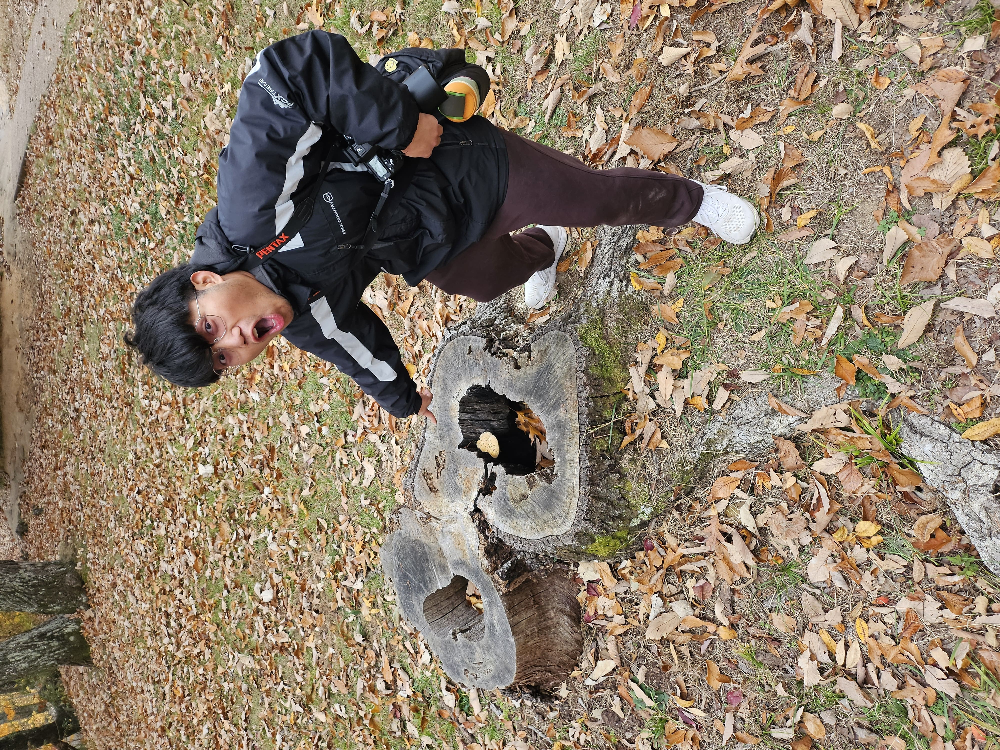

What is the CAAC?
The Chicago Avian Adventure Collective (CAAC) is a community of bird enthusiasts dedicated to exploring and appreciating the diverse avian life in Chicago. We organize many events from birding walks to educational workshops to foster a deeper connection between people and birds in our city.
How It All Began
In 2024, JC Soliman, the founding member of the Chicago Avian Adventure Collective met up with his friends to go for a walk in the park. Along the way, they found the bird that started it all: a dopey-looking Double-Crested Cormorant flying overhead. It then met up with a large flock of cormorants and they started to skim along the top of the water to catch some fish. The awe from seeing the flock galvanized the group to start searching for birds within the city. And boy has it been a blast! At this point, there have been more than 20 members who participate in the collective's activities and hopefully more in the future.
Meet the Founder
Jancarlo (JC) Soliman
Originally from Jacksonville, FL (DUUUVAL!), JC is both a bug and bird enthusiast. He spends his time taking photos of both the sky and the ground for any fauna that happens to pass by. Click here to see photos that he took on CAAC walks posted on Instagram: @anothernaturephoto
